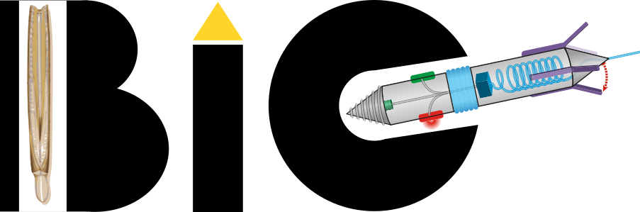
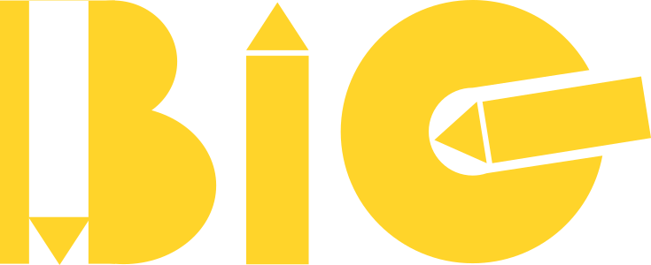

About
What is BiG?
Through evolution, numerous biological organisms have developed smart and sustainable solutions to address challenges posed by changes of biological diversity, population, energy source and the environment at large. Nature, especially the biosphere, can thus serve as a source of inspirations for mankind, who is facing similar challenges. With critical needs for sustainable and resilient infrastructure systems, civil engineers have central roles to play in bio-inspired research.
Treating soil as living systems, the backbone of our research lies in advancing knowledge of the fundamental behaviors of soil in interaction with living organisms (e.g., bacteria, plants, burrowing animals) involving multi-physics processes at multiple scales. The new knowledge is then applied to develop next-generation geotechnics.
Our tools
In our tool box, we have,
Analytical tools in geomechanics and physics (e.g., Critical State Soil Mechanics, Cavity Expansion Theory, Resistance Force Theory);
Numerical tools including Discrete Element Method, Multi-Body-Dynamics, Computational Fluid Dynamics, and Finite Element Methods;
Experimental tools including customized 2D and 3D soil chambers, video-based kinematics capture systems, traditional geotechnical apparatus (tri-axial, direct shear), rapid prototyping workstation (3D printer, open-source micro-controllers, electric motors, sensors, soft robot toolkits), inter-particle force-chain visualization chamber with photoelastic discs;
Over the years, our group becomes more and more involved in programming for modeling, prototyping, testing and documenting. We mainly use Python, Matlab and C++ for computing; we open-source libraries for robotic control; we strive to practice reproducible research by using documenting and publishing tools such as Rmarkdown and Quarto. We love tinkering around with open-source software and hardware; and we would love to share our findings and tools with others.
What’s in the logo? (Just for fun)
The logo consists of three customized letters B, i, and G, short for Bio-inspired Geotechnics. It encourages us to be bold and dream BiG.
The logo is made up with only three basic shapes: circle, rectangle and triangle; the minimalistic and modular design reminds us that we can achieve BiG by understanding and applying the fundamentals.
The triangles are the “living” parts in the logo, rendering the letters visually resemble small burrowing robots in different directions.
We have fun by playing with the colors of the logo and by replacing the robot module with burrowing animals such as a slender razor clam, a tree root or an earthworm.



Contact us
: Office 126, Goldwater Center for Science and Engineering, 650 E Tyler Mall, Tempe, AZ 85281
: (480) 965-2489